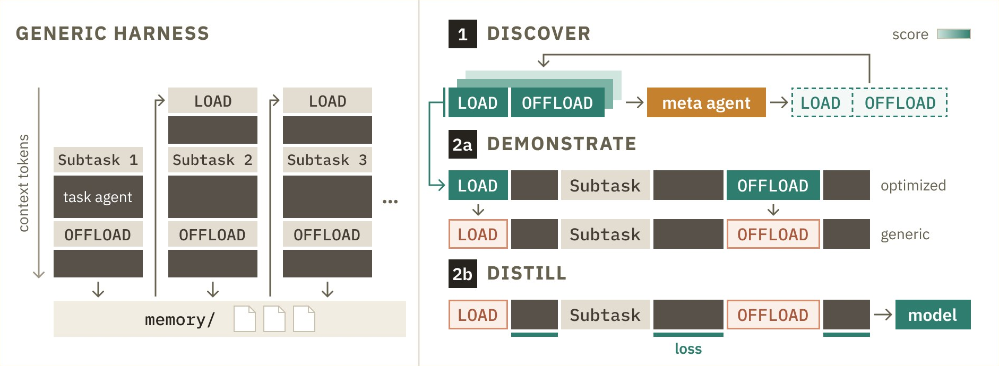
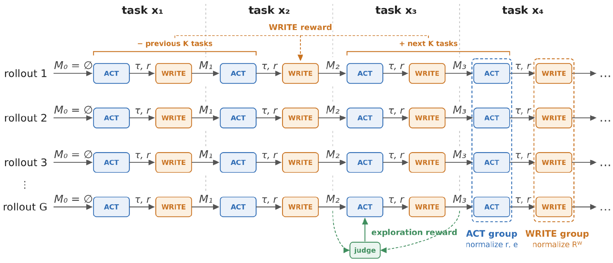
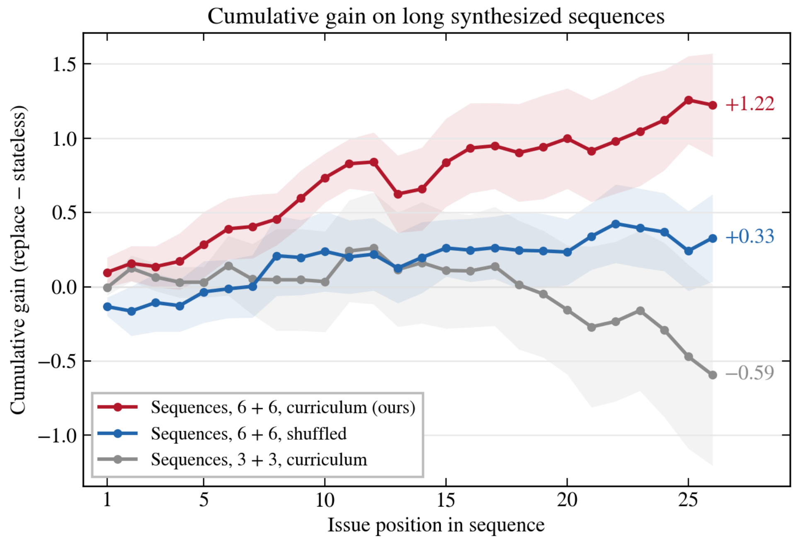
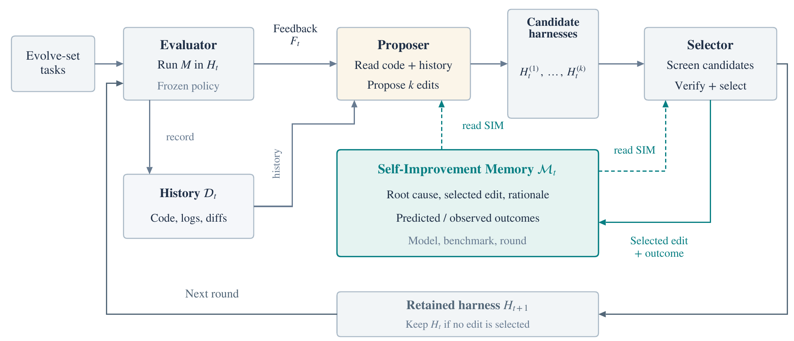
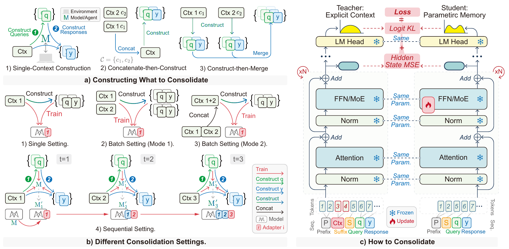
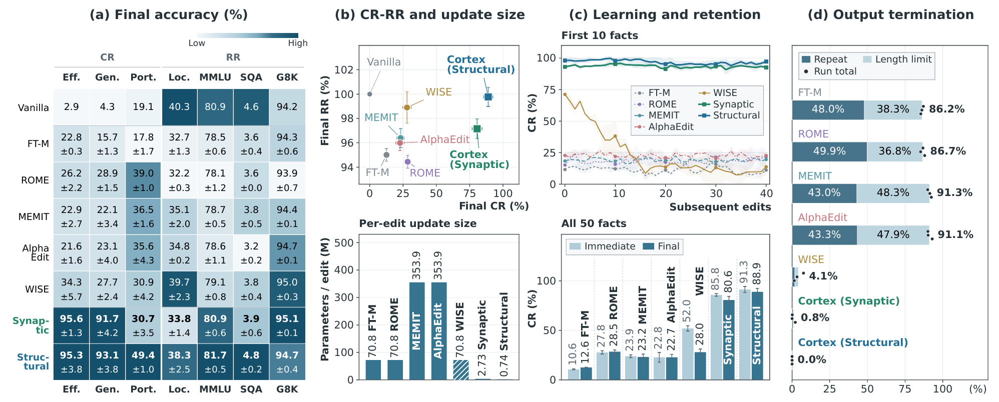
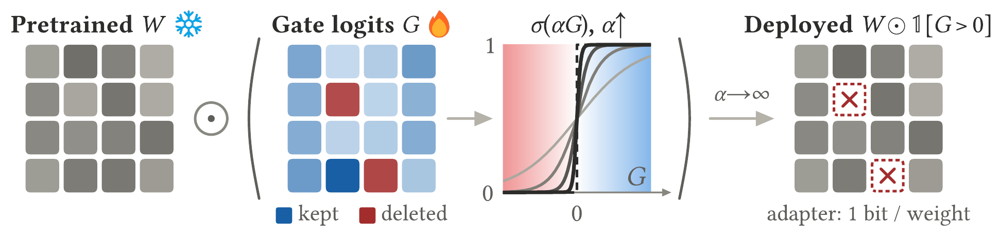

一、先把病分诊：三种"学了也白学"
持续学习（continual learning，以下简称 CL）是个三十年的老问题。模型学会新任务，旧知识的表征就被覆盖，这就是灾难性遗忘。正则化、架构隔离、经验回放，方案换了几代，病根一直在。下文的 68.41 分和 22.7% 巩固率，就是它在 2026 年的两个新变体。
今年 11 月这批工作有意思的地方，是把"学了也白学"拆成了三种不同的病。
第一种，学到了，但带不走。Google Cloud AI 和 DeepMind 的 SIM 一开头就摆了个尴尬结果。在 Opus 5.5 上进化好的 agent harness，直接搬去 Gemini 3.8 Flash，起点 68.41。比 Gemini 自己的 seed（73.89）还低[1]。harness 只是一堆沉默的代码。它说不出每处修改当初想修什么，也说不出验证结果如何。经验没有随代码一起搬家。
第二种，学进去了，但存不住。连续更新五十次之后，传统知识编辑方法的巩固率（CR，撤掉上下文后收益还剩多少）掉到 22.7%。保留率（RR，原能力有没有掉）看着还有 96%。实际是两件事同时成立：新知识根本没学会，旧能力靠不动才保住[2]。
第三种，存进去了，但整合过头。UIUC 和清华的团队用完全正确的轨迹做连续记忆整合，GPT-5.4 的准确率从 100% 掉到 54%[3]。错误不来自脏数据，来自整合这个动作本身。
三种病指向五个动作。前三个是同一条梯子的三级：经验写进记忆（Meta、RIME、AutoMem）、记忆记成可追责的过程（SIM）、过程再转正进参数（Cortex）。后两个是这条梯子的边界条件：用删除代替写入（Deletion Tuning），以及贯穿全程的审计（配对实验和评估闭环）。
下文五节按这条梯子往上走。
二、外部记忆不再手写：让模型自己发现"怎么记"
先看"怎么写进去"。这一层过去全靠一条手写 prompt。prompt 要回答三件事：往记忆里写什么、怎么组织、什么时候读回来。
Meta FAIR 的 pilot study 先泼了冷水。四种记忆策略由人类预先设计：Summary、Retrieval、Skill、Hypothesis。再加一个 generic 基线。四个方案在 Database、Codebase、Spectrum 三个任务流上跑了一遍。没有一种同时领先[4]。越具体的记忆设计，越容易绑死一个任务。既然没有万能设计，那就别让人写。
它的解法是 Discover–Demonstrate–Distill 三步（发现、见证、蒸馏）。meta agent 和任务 agent 用同一个模型：Kimi-K2.6。meta agent 读任务 agent 的完整轨迹和分数，诊断"记忆用得差在哪"。然后重写控制记忆行为的两条 prompt。LOAD 管子任务开始前加载什么，OFFLOAD 管结束后卸载什么。

效果可以看三组数字。自动发现的 prompt 三任务平均 56.0 分。人类手写最好 44.6，generic 基线 36.1[4]。Spectrum 任务流的首个子任务几乎打平（21.7 对 21.9）。积累到后面，才拉开成 49.9 对 42.5。记忆是复利资产，用首战成绩评估它，等于用一天的天气评估气候。
最精巧的是第三步。把跑出来的轨迹里的优化 prompt 换回 generic prompt，再拿这批轨迹做 SFT（LoRA rank 64）。可行的前提是：优化版和通用版的差别只在记忆指令，行为本身对两种指令兼容。模型在"假装这些行为是自己想出来的"数据上训练，就真的自己会想了。蒸馏后 generic 条件下 43.1。比直接拿 generic 轨迹做 SFT 的 37.6 高 5.5 分。prompt 层的记忆增益被部分搬进了权重，部署时不再依赖那条 prompt。
RIME：连"探索"一起训
CMU 的 RIME 干脆不优化 prompt。它把"写记忆"这个动作拿去训练。立论很硬：你没法在指令里描述你还不知道的未来。所以 prompt 写不出对以后真正有用的记忆[5]。
做法是一个模型两个角色。actor 带记忆解题，writer 在任务结束后更新记忆。两者共享参数，用 GRPO 联合训练。奖励也分两份。writer 拿 improvement reward：写入后 K 个任务的均值，减去写入前 K 个。actor 拿 exploration reward：由 LLM judge 按四条准则比较记忆的前后版本。四条是新发现、纠正错误认知、给未来留具体线索、非冗余。

最反直觉的结论是：只训 writer 没用。writer 能保留什么，取决于 actor 轨迹里有什么。只优化任务分的 actor 会越学越直奔主题，留给未来的信息越来越少。writer 无米下锅，记忆没用。actor 更不肯用记忆。循环就这么塌了。消融里去掉探索奖励，累计增益直接转负，比裸跑还差[5]。
所以 RIME 必须连"探索"一起训。任务流本身就是方法的一部分：同一个仓库两段各 6 个 bug，从易到难。改成乱序，增益大幅缩水。砍成 3+3，退化到单任务水平[5]。
结果：Qwen3.5-4B 在 Codebase Adaptation 上累计从 0.82 走到 10.55。这个分数超过 GPT-5.4（10.14）和 Claude Opus 4.7（10.36）。经验增益 +2.27，与 GPT-6 Astra 的 +2.26 打平[5]。

Stanford 的 AutoMem 把这条路推到行为层。文件系统的读、写、追加，被提升成和"向前走"同级的动作。模型在同一次前向里就能决定记什么。Qwen2.5-32B 只优化记忆、不动任务动作权重。Crafter 上从 25% 到 51.4%[6]，无效动作率降了 32% 到 65%。
三家的共同点很清楚：记忆策略从"人手写的结构"，变成了"被优化的对象"。区别只在优化什么。Meta 优化 prompt。RIME 优化写记忆这个动作的参数。AutoMem 优化记忆操作的熟练度。
三、经验要记成可问责的过程，不是结论
外部记忆写下来了，下一个问题是记成什么样。SIM 的回答是：记成工程日志。
它的记忆单元按"复发性问题"组织。一个根因诊断（比如"任务没验证就宣告完成"）下面挂若干次尝试。每次尝试记三样：改了什么和为什么、预测会修复哪些任务、以及观察到的结果和出处[1]。
三个设计选择，每个都和行业直觉相反，后面都跟着对账数据：
一是预测先行。提出任何修改，必须先写下"预计修复哪些任务"（比如"修好 Codebase 的完成门控"），评估完逐项核对。记忆从流水账变成可问责的假设检验。
二是失败也入账。只记录被选中的修改，但回归和失败一起记。负证据防止重蹈覆辙，记失败比记成功值钱。
三是不检索、全量读。每轮把完整记忆塞进 context，不 RAG、不截断。harness 的问题只有几十个量级，结构化之后全塞得下。这条对"记忆必须配检索"的行业惯性给了一个工程反例。

效果里最硬的是配对实验。同一个起点、同样的预算和轮数，独立进化十次做成对续跑。SIM 赢下 9 对，平均 +2.36 分，p=0.003[1]。跨模型迁移（Opus→Gemini）四个域全部第一。workspace 域从 68.41 追到 84.75。
更有信息量的是两个消融实验。
第一个：只给优化器带"根因诊断清单"、不带尝试史，行不行？不行。六个跨数据集 setting 上相对无记忆迁移在 -1.82 到 +2.40 之间晃[1]。诊断只说"这里有个病"，没说哪些药方试过、疗效如何。经验的价值在完整的尝试史，不在结论摘要。
第二个把 CL 的教科书主题搬到了元层面。源域跑 225 个 rollout 之后做保留测试。带完整 SIM 的系统只丢 3 个成功 rollout，无记忆版丢 6 个。同时在新域净赚 6.67 分，"只带诊断"版只有 0.61[1]。迁移和遗忘这对老矛盾，在学习对象从权重换成 harness 代码之后，第一次被同时拿住。
四、参数记忆：把上下文"买断"进权重
外部记忆有个先天缺陷：它是租来的。上下文的收益，撤掉上下文就归零。检索对"表面不相关"的经验也基本无能为力。浙大、字节 Seed 和清华的 Cortex 把"转正"形式化成一个学习问题。给定模型 M 和有效上下文 C，求 M'。约束是让巩固率 CR（撤掉 C 后收益还在）和保留率 RR（原能力不掉）同时达标。还要加一条：连续更新时旧记忆不丢[2]。
Cortex 的写法分三步，每一步都值得抄。
学什么：prospective rehearsal。用冻结的旧模型生成"未来哪里会用到这段经验"的 query，配上带上下文的答案当训练目标。人脑拿过去模拟未来，这里用的是同一个思路。
写在哪：只写 FFN。两种参数化——Synaptic（在现有投影上加低秩增量）和 Structural（新增非线性通道）。两者都能折进标准 FFN，推理时没有额外机制。MoE 上把新参数折进每个 expert，让新参数吃到全量 token 的训练信号。
怎么写：蒸馏。带上下文的冻结 teacher 教不带上下文的 student。损失是输出分布的 KL，加上 FFN 之后隐状态的 MSE。连续更新时只训新参数。query 只存问题，不存答案。答案由当前 checkpoint 重新生成。

数字很扎眼。Qwen2.5-14B 连续 50 条事实编辑，Cortex-Structural 的 CR 88.9%、RR 99.8%，只用了 0.74M 参数。AlphaEdit 是 CR 22.7%、RR 96.0%，用了 353.9M 参数，参数量差 478 倍[2]。传统编辑方法有 86% 到 91% 的回答会触发重复或截断。Cortex 是 0.0%。

两个消融的结果都反直觉。把更新范围从 FFN 扩到 attention，CR 和 RR 双双下降，写得越多越差。去掉 replay，Structural 还能保住 40.5% 的旧编辑。Synaptic 只剩 8.0%。结构扩展天生抗遗忘[2]。
这也让"参数记忆"有了可以对照的设计标准。Cortex 自己给的三条是：分布式整合（新经验和旧知识能组合复用）、可生长容量（装不下就加通道）、原生访问（前向自然触达，不需要检索接口）[2]。
架构那一层也在动同一件事。Google 的 Memory Caching 把 RNN 的记忆状态分段缓存。后面的 token 聚合所有历史段落，不再只依赖一个固定隐状态。它的解释很漂亮：递归更新本身就是在线优化，每段缓存等于一个优化检查点[7]。段大小取 1，它退化成门控全局注意力。只留一段，它就是标准 RNN。RNN 和 Transformer 之间因此成了一条连续光谱。1.3B Titans 上，16K 长度的 NIAH 从 4.0% 提到 32.2%。
五、删除与遗忘：删除成了一等公民
前面四节都在讲"写"。有意思的是，11 月另一条线把"删"抬到了同等位置。
NYU 和 Calgary 的 Deletion Tuning 问了一个更省的问题。学会一个新任务，最少要改多少？答案是一个值都不改。冻结全部预训练权重。唯一可训练的，是每个 transformer block 里门控投影的同形状 logit 矩阵。训练时做软门控，部署时把负值对应的权重永久置零，比例不到 0.05%[8]。

它追平了全量微调。Llama8B 在 GSM8K 上 83.55 对 83.24，adapter 只有 8.4MB，全量 checkpoint 是 30633MB。Qwen3-30B-A3B 上 58.54 对 58.43，体积差 3900 倍[8]。更关键的是遗忘。全程 forward KL 小于 0.05。作为对照，全量微调会爬到 1.0 到 1.5。六个旧任务离 base 都不到 1 个点。同参数量的 MTH 对照照样忘。所以功劳在"只删不写"，不在稀疏。
同一条线上还有两种对遗忘的重新解释。Learning is Forgetting 用信息瓶颈论证：预训练本来就有主动遗忘的阶段。压缩和遗忘共享同一套机制[9]。前面提过的 Useful Memories Become Faulty 把另一面摆出来：整合不是越多越好。过度抽象会制造错误分组和过度泛化，原始轨迹该保留成一等公民[3]。UMD 和 CMU 的 LLM Sleep 从架构侧给了个提醒。巩固缺的是计算时间，不是存储空间。Ouro 1.4B 在清掉 KV cache 之前多做 N 轮前向，数学推理从 41.9% 到 61.5%[10]。
到这里，记忆管理的动词表齐了：写、删、缓存、蒸馏。遗忘也从 bug 变成了资源。
六、审计：瓶颈不在提出方案，在留住最好的
三家的实验设计里，藏着一个不太好听的事实：记忆系统真正的瓶颈是评估。
Meta 那边 44 个候选修订，37 个没能超过历史最优[4]。Codebase 任务流上，第一代从 34.3 被诊断改到 52.2，再改到 55.7。Database 和 Spectrum 第一代就到顶了。这不是 meta agent 不努力，是"提新方案不难，认出哪个最好才难"。
SIM 用预测先行把记忆变成可问责的假设检验。写下的预测和观察到的结果逐项对账，对不上就是一次可归因的失败[1]。RIME 用两份奖励，把"记忆有没有用"和"探索有没有效"拆开[5]。这三家解答的是同一个问题。
记忆系统没有配对的、可核对的评估闭环，就只是成本更低的重复犯错。
这一条对做工程的人最扎心。你可以照抄 SIM 的 entry schema（根因键控、预测/观察对、出处）。但没有对应的评估回路，抄来的 schema 会退化成一份没人核对的流水账。
七、启示：六条正在收敛的方向
一、记忆从"设计出来的结构"变成"优化出来的策略"。 Meta 重写记忆指令，RIME 用 RL 训写记忆，AutoMem 把记忆操作练成技能。共同趋势是：记忆设计不再吃人类先验，而是和其他超参数一样进优化循环。
二、学习对象逐层上移，CL 的三个主题跟着上移。 从权重到记忆指令到 harness 代码，迁移、遗忘、干扰在每个层面上都有自己的对应物。SIM 证明元层面的遗忘可以被测量（源域只丢 3 个 rollout），也可以被平衡（新域 +6.67）。
三、非参数记忆和参数记忆之间出现了转化管道，也有了度量衡。 Cortex 先把"上下文收益是租的"说破，再把"转正"形式化为 CR 和 RR 同时达标。一条完整管线因此成形：经验先以上下文试用，验证收益后蒸馏"买断"进参数，查询侧从此免检索。
四、删除成为一等公民。 Deletion Tuning 证明"不写新值也能学会新能力"，遗忘也近零。记忆管理的完整动作表从"写"扩展到"写、删、缓存、蒸馏"。
五、经验的正确粒度是过程，不是结论。 这是 Google 和 Meta 最深的一致。只带诊断清单不行，价值在完整尝试史。单 rollout 训练直接坍塌。记忆里最值钱的字段是"当时预测了什么、实际发生了什么"。
六、评估是记忆系统的真瓶颈。 没有可核对的评估闭环，记忆只是更便宜的重复犯错。这也解释了为什么这批论文里，消融实验比主结果更值得读。
经验不沉淀，就随会话蒸发。沉淀下来但没有出处和验证，就退化成不可信的流水账。下一轮的竞赛，不在谁的 agent 更会改自己，而在谁的记忆系统能回答三个问题：什么值得记，怎么记，记住之后怎么变成下一轮进化的起点。
参考文献
- Self-Improvement Memory Enables Continual Recursive Self-Improvement. Google Cloud AI × Google DeepMind × Penn State. 2026-11-18. arXiv:2611.18856
- Cortex: Consolidating Context into Parametric Memory. 浙江大学 × 字节跳动 Seed × 清华大学. 2026-10-14. arXiv:2610.20399
- Useful Memories Become Faulty When Continuously Updated by LLMs. UIUC × 清华大学. arXiv:2605.12978
- Self-Improving Memory. Meta FAIR. 2026-11-18. facebookresearch.github.io/RAM/blogs/self_improving_memory/
- How to Train Memory Writing for Continual Learning. Carnegie Mellon University. 2026-11. 未挂 arXiv，PDF 存档于知识库
- AutoMem: Automated Learning of Memory as a Cognitive Skill. Stanford University. 2026-07-01. arXiv:2607.01224
- Memory Caching: RNNs with Growing Memory. Google. 2026-02-27. arXiv:2602.24281
- The Surprising Effectiveness of Deleting Weights in LLM Post-Training. NYU Agentic Learning AI Lab × University of Calgary. 2026-11-07. arXiv:2611.10866
- Learning is Forgetting: LLM Training As Lossy Compression. 2026-04-08. arXiv:2604.07569
- Language Models Need Sleep: Learning to Self-Modify and Consolidate Memories. UMD × CMU. 2026-07-10. arXiv:2606.03979